FoodLuck MEO 操作説明書 18
各媒体連携機能
Yahoo!プレイス、Appleマップ、食べログ、エキテンなど外部媒体をFoodLuck MEOから安全に更新するための実務マニュアル
| この資料の目的 各媒体連携機能は、Google以外の集客媒体にも店舗情報、写真、投稿、クチコミ、インサイトなどを連携するための機能です。飲食店の現場では、どの媒体へ反映される操作なのかを確認してから使うことが大切です。 |
|---|
| 操作前の注意 外部媒体への連携、登録、投稿、クチコミ返信、メニュー一括登録は、実際のお客様が見るページへ影響します。特に食べログのメニュー一括登録は上書き影響が大きいため、実行前に必ずFoodLuck側へ確認してください。 |
|---|
1. 各媒体連携でできること
FoodLuck MEOでは、GoogleだけでなくYahoo!プレイス、AppleBusiness、食べログ、エキテンなどへ情報を連携できます。媒体ごとに更新できる項目が違うため、まずは何を更新したいのかを確認します。
| 媒体 | 主な更新・確認項目 | 現場で使う場面 | 注意点 |
|---|---|---|---|
| Yahoo!プレイス | 基本情報、写真、投稿、クチコミ、インサイト | GoogleとYahoo!の情報差をなくす | Google投稿は必須。Yahoo!投稿は文字数上限330字。 |
| AppleBusiness | Appleマップの基本情報、URL、審査状態 | Appleマップ上の店舗情報を整える | 審査中は再連携しても解決しない場合がある。 |
| 食べログ | 基本情報、PR文、SNS、メニュー、クチコミ | 食べログの店舗ページ情報を整える | メニュー登録は既存データを上書きする。 |
| エキテン | 基本情報、写真、投稿、クチコミ、管理者 | エキテン掲載情報を更新する | 電話番号や写真コメントなど独自ルールがある。 |
| その他 | ホットペッパー、ぐるなび等の基本情報 | 連携対象の確認 | 更新できる範囲は媒体ごとに異なる。 |
| 更新できる項目の見方 ホットペッパー、ぐるなびなど一部媒体は店舗基本情報のみが対象です。写真、投稿、クチコミ、インサイトまで使える媒体と、基本情報だけ確認する媒体を混同しないようにします。 |
|---|
2. 共通操作の考え方
多くの媒体連携は、ビルアイコンから「設定」>「店舗」を開き、対象店舗を選んで連携します。その後、店舗基本情報、写真管理、投稿、クチコミ管理、インサイトなど各画面で対象媒体を選んで操作します。
2-1. 連携するときの基本手順
1. 連携したい媒体の管理画面にログインできるか確認する。
2. FoodLuck MEOで、ビルアイコン > 設定 > 店舗から対象店舗を開く。
3. 対象媒体の連携欄までスクロールし、ログインまたは連携ボタンを押す。
4. 外部媒体側で許可・同意・店舗選択を行う。
5. FoodLuck MEOに戻り、店舗名、媒体URL、ステータスが表示されているか確認する。
2-2. 更新するときの基本ルール
・画面上部の更新媒体チェックで、どの媒体へ反映するかを選びます。
・媒体アイコンが付いている項目だけ、その媒体へ更新できます。
・Googleと外部媒体で登録情報が違う場合、赤字で外部媒体側の情報が表示されることがあります。
・登録するボタンを押すと、選択した媒体へ反映されます。押す前に対象媒体を必ず確認します。
・反映まで時間がかかる媒体があります。すぐ表示されない場合でも、連続で何度も再登録しないようにします。
| 現場での判断 営業時間、電話番号、住所、メニュー、クチコミ返信は来店前のお客様に直接影響します。少しでも不安がある場合は、保存前にFoodLuck側へ確認してください。 |
|---|
3. Yahoo!プレイス
Yahoo!プレイスは、Yahoo!検索やYahoo!マップで表示される店舗情報です。Googleと同じ内容に見えても、更新媒体を選ばないとYahoo!側には反映されません。
3-1. 申し込み・アカウント連携
・複数店舗を一括で申し込む場合は、Yahoo!プレイスの子施設登録シートをダウンロードして入力します。
・管理者名、半角数字、環境依存文字、屋号と地名の半角スペースなど、入力ルールに注意します。
・Yahoo!プレイス連携は、FoodLuck MEOの店舗設定から「Yahoo!ログイン」を押し、同意、ビジネス選択を行います。
・連携後、店舗名、Yahoo!カテゴリー名、Yahoo!プレイスURLが表示されれば完了です。
FAQ画像: Yahoo!プレイス連携画面
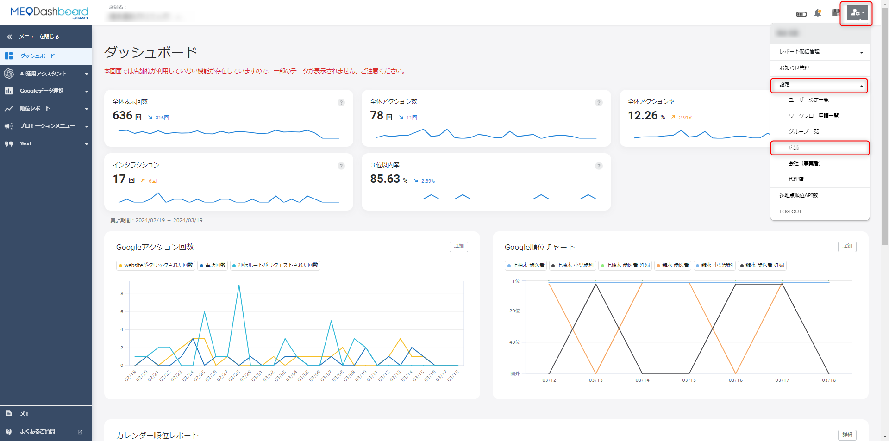
・ビルアイコン > 設定 > 店舗から対象店舗を選び、Yahoo!ログインを押します。
・連携後は、詳細ボタンからYahoo!の店舗基本情報画面へ進めます。
3-2. 店舗基本情報を更新する
1. 左メニュー「Googleデータ連携」>「Googleビジネスプロフィール」>「店舗基本情報」を開く。
2. 画面上部の更新媒体でYahoo!を選択する。GoogleとYahoo!の両方を更新する場合は両方を選ぶ。
3. Yahoo!の赤いアイコンが付いている項目を編集する。
4. NAP（店舗名・住所・電話番号）に相違がないか確認する。
5. ページ下部の登録するを押す。
・改ざん防止の処理はGoogleのみに反映されます。
・Yahoo!属性はGoogle属性とは別です。両方変える場合は、それぞれの登録ボタンを押します。
・グループ一括変更では、Excelの更新媒体列でYahoo!を選び、Yahoo!シートを編集してインポートします。
・Yahoo!の特別営業時間は最大10日分までです。
FAQ画像: Yahoo!店舗基本情報の更新媒体選択
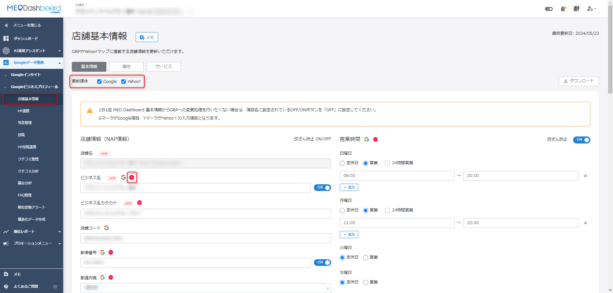
・更新媒体の選択が最重要です。
・Yahoo!だけを更新するのか、Googleも同時に更新するのかを確認します。
3-3. 写真・投稿・クチコミ・インサイト
| 機能 | 操作の要点 | 注意点 |
|---|---|---|
| 写真管理 | 対象媒体からGoogle・Yahoo!の設定状況を確認し、新規登録で媒体とカテゴリーを選ぶ。 | カバー写真は「・・・」から編集。削除も外部表示に影響。 |
| 投稿 | 投稿画面の媒体でYahoo!を選び、タイトル、掲載期間、概要タブ掲載期間を設定する。 | Google投稿は必須。Yahoo!タイトルは50字以内、本文はURL含め330字以内。 |
| クチコミ一括返信 | グループ画面からExcelをダウンロードし、未返信行の返信内容を入力してインポート。 | インポート後は即時返信される。返信文の確認が必須。 |
| AI返信 | AI返信文章ダウンロードでT列に作成された返信を確認・修正してからインポート。 | AI文をそのまま出さず、店舗らしい言葉に整える。 |
| インサイト | 媒体プルダウンでYahoo!を選び、期間を指定して表示回数・アクション数を見る。 | 比較レポートでは前年比較、四半期比較などを確認できる。 |
FAQ画像: Yahoo!投稿の媒体選択
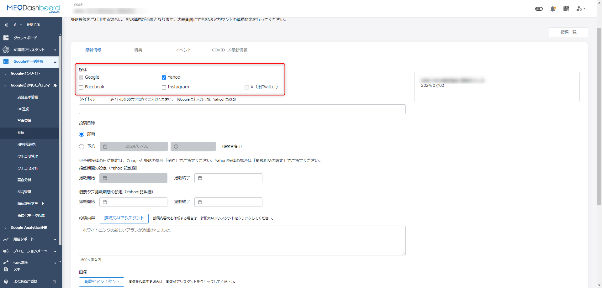
・Yahoo!投稿ではタイトルが必須です。
・掲載期間と概要タブ掲載期間の違いを確認します。
FAQ画像: Yahoo!インサイト確認
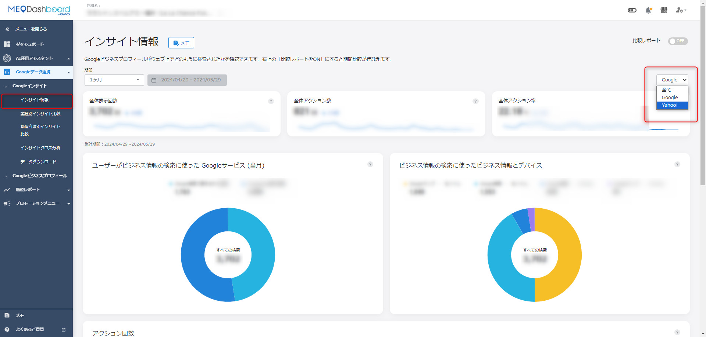
・右側のプルダウンでYahoo!のみを選択できます。
・全体表示回数、アクション数、電話、ルート、予約などを見ます。
4. AppleBusiness
AppleBusinessは、Appleマップで表示される店舗情報を管理するための連携です。Apple側の審査やアカウント権限が関係するため、連携できない時は状態確認が重要です。
4-1. Appleアカウント作成と審査
・管理用Apple Accountを作成する場合は、日常的に確認できるメールアドレスを使います。
・Apple Business Connectへログインし、会社情報や店舗情報を登録します。
・二段階認証や電話番号認証が必要になる場合があります。
・電話番号認証がうまくいかない場合は、国際形式、SMS受信設定、別端末、Apple側の障害、番号の利用履歴を確認します。
FAQ画像: Apple Account作成画面
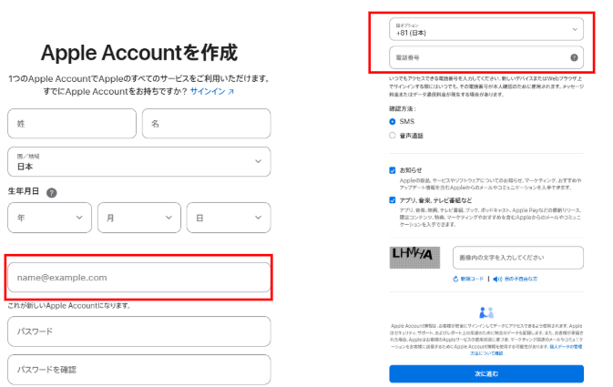
・国、氏名、生年月日、メールアドレス、電話番号を入力します。
・飲食店用の管理アドレスは、退職や担当変更時にも引き継げるものを使います。
4-2. FoodLuck MEOとの連携
1. Apple Businessにログインできる状態にする。
2. FoodLuck MEOで、ビルアイコン > 設定 > 店舗から対象店舗を開く。
3. Apple Business連携の「Sign in with Apple」を押す。
4. 会社またはApple Accountを選択し、必要に応じてReconnectを押す。
5. ビジネス選択画面で対象店舗を選び、連携完了後にアカウント表示を確認する。
FAQ画像: Apple Business連携
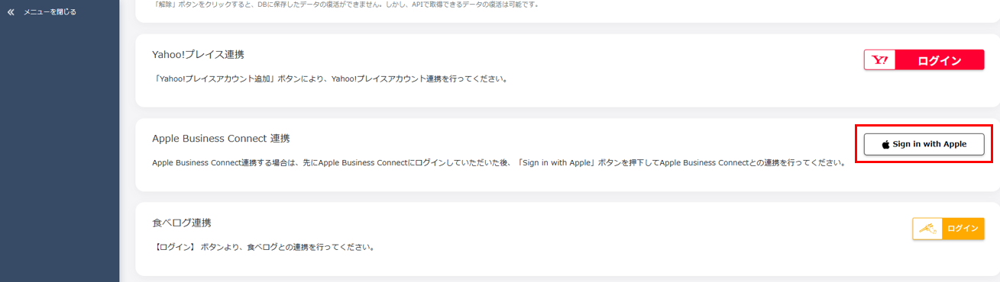
・Apple側の会社・店舗を選択して連携します。
・過去に連携している場合はReconnect画面が出ることがあります。
4-3. Appleマップ基本情報とエラー対応
・店舗基本情報画面でAppleにチェックを入れると、Appleへ更新できます。
・更新できる項目は、ビジネス名、郵便番号、住所、WEBサイトURL、メインカテゴリーです。
・Apple専用の住所入力欄は、市区町村、町・地名、丁目・番地・号、ビル名に分かれます。
・AppleマップURLが正しく反映されない場合、審査ステータスがPROCESSINGの可能性があります。
・正常な状態はPUBLISHEDです。PROCESSING中は再連携を繰り返さず、審査完了を待ちます。
・連携エラー時は、ロケーション公開状態、別アカウント紐付け、管理者またはオーナー権限を確認します。
FAQ画像: Appleマップ基本情報の更新
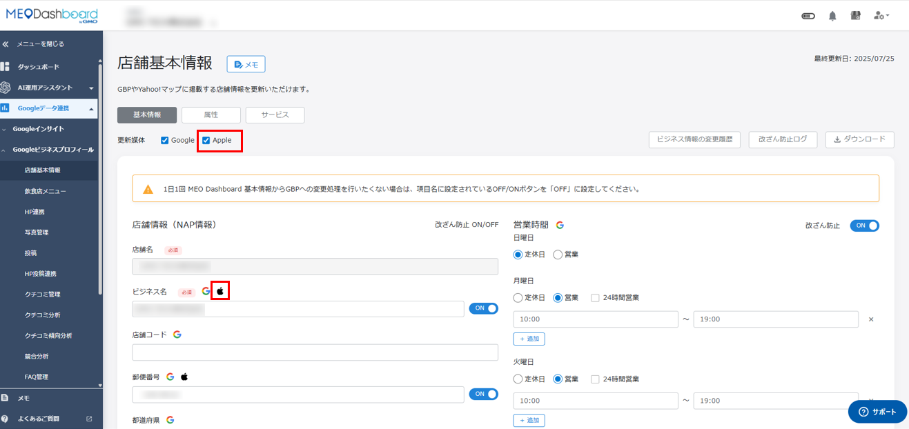
・更新媒体でAppleにチェックを入れてから編集します。
・Appleロゴが表示されている項目が更新対象です。
| Appleで解決しない時 時間を置いてもPUBLISHEDにならない、または同じエラーが続く場合はApple Developer SupportやApple Business Connect側で確認が必要です。FoodLuck側で確認してから進めてください。 |
|---|
5. 食べログ
食べログ連携は、連携しただけで食べログ上の情報が勝手に上書きされるわけではありません。ただし、FoodLuck MEO上で更新操作を行った場合は、該当項目が食べログへ反映されます。
5-1. アカウント連携
1. ビルアイコン > 設定 > 店舗から対象店舗を開く。
2. 食べログ連携のログインを押す。
3. 食べログ店舗管理画面のログインIDとパスワードを入力する。
4. 連携成功後、店舗名、ジャンル、食べログURL、ステータスを確認する。
・グループIDでは連携できません。
・連携画面では、店舗名、ジャンル、URL、ステータス、詳細画面、連携解除が確認できます。
FAQ画像: 食べログログイン画面
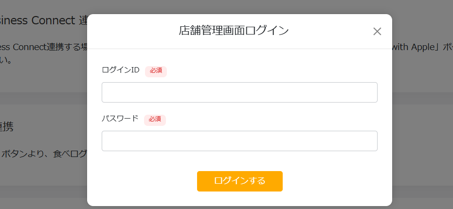
・店舗管理画面用のログイン情報を使います。
・IDやパスワードの扱いは慎重に行います。
5-2. 店舗基本情報とPR文
・食べログにチェックを付けた状態で更新すると、食べログの該当項目が更新されます。
・WEBサイトURL、SNSプロフィール、PR文、営業時間、祝前日・祝日・祝後日、支払い方法などが対象です。
・SNSプロフィールはアカウント情報のみを入力します。
・PR文タイトルは5から45文字、PR文詳細は5から200文字です。
・営業時間は祝日・祝前日・祝後日にも登録でき、1項目あたり最大3種類の営業時間を設定できます。
FAQ画像: 食べログ店舗基本情報
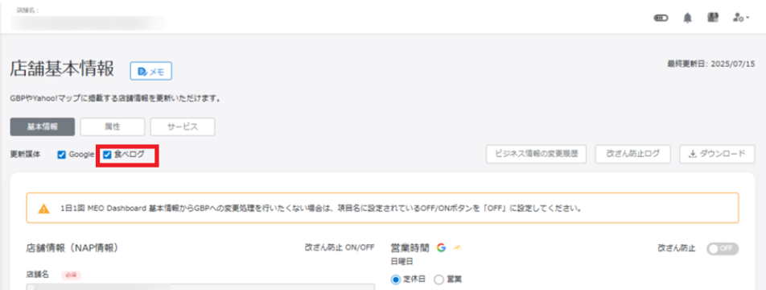
・食べログのチェックが入っているか確認します。
・食べログアイコンが付いている欄が更新対象です。
5-3. 飲食店メニューと一括登録
| 重要 食べログに連携する場合、食べログ管理画面上で登録済みの料理、ドリンク、ランチのメニュー一覧は、公開中・下書きに関わらず一度すべて削除され、FoodLuck MEO上のデータが公開中として登録されます。画像も同様です。 |
|---|
・飲食店メニュー画面で食べログにチェックを付けると、食べログ用の項目や文字数制限が表示されます。
・写真登録では、料理写真、ドリンク写真、その他写真のカテゴリーを選びます。
・一括インポートでは、連携媒体、カテゴリー、メニューカテゴリー説明文、おすすめ設定などの列を使います。
・画像はJPG形式、370×370px以上推奨です。500KBを超える画像は自動圧縮されます。
・通貨はJPY、価格は整数で記入します。
FAQ画像: 食べログ飲食店メニュー
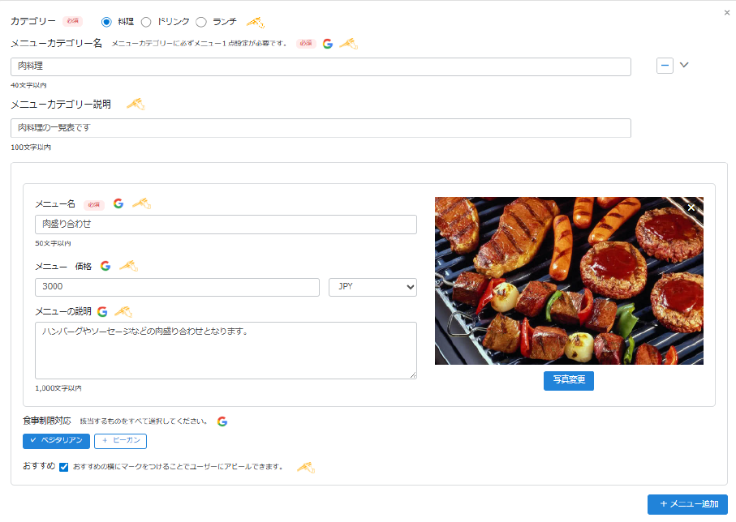
・食べログ連携時は、項目名や制限がGoogleだけの場合と変わります。
・一括登録前に、既存の食べログメニューを残す必要がないか確認します。
5-4. クチコミとエラー対応
・食べログのクチコミ取得は1日2回、朝と夕方に行われます。
・返信文を登録すると、食べログ側で審査が入り、ステータスはチェック中になります。
・承認済・公開中になると済、要修正になると修正理由が表示されます。
・要修正の場合は理由に沿って文章を直し、再度申請します。
・連携時に「パラメーターが正しくありません」と表示される場合、PR文が5から200文字の範囲外、または食べログ側の登録情報更新が未完了の可能性があります。
FAQ画像: 食べログクチコミ管理
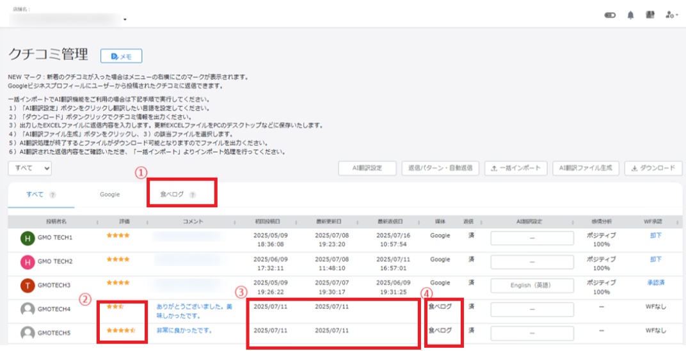
・食べログのクチコミは媒体欄とステータスで確認します。
・返信は審査がある前提で、丁寧な文章に整えます。
6. エキテン
エキテンでは、申し込み、アカウント連携、店舗基本情報、写真、投稿、クチコミ返信、管理者追加などを扱います。有料アカウントや管理者権限に関わる操作は、FoodLuck側と確認しながら進めます。
6-1. 申し込み・アカウント連携
・無料会員は、エキテンの申し込みページから店舗名、住所、電話番号、メールアドレス、業種などを入力します。
・審査は2から10営業日程度です。審査後、管理画面ログイン用のIDやパスワードがメールで届きます。
・正会員の申し込みは担当へ連絡します。
・同じメールアドレスで複数店舗を管理できます。店舗数分の会員登録は不要です。
・FoodLuck MEOとの連携は、店舗設定からエキテン連携のログインを押し、対象店舗を選択します。
FAQ画像: エキテンログイン画面
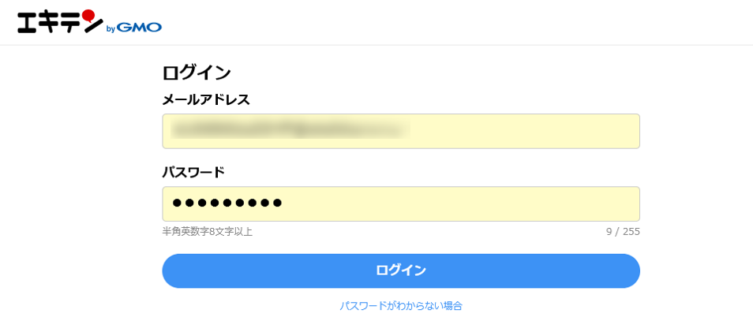
・エキテンのメールアドレスとパスワードでログインします。
・ビジネス選択画面で対象店舗を間違えないようにします。
6-2. 店舗基本情報
・個店では、店舗基本情報画面の上部でエキテンにチェックを入れて更新します。
・ビジネス名、ビジネス名カタカナ、郵便番号、住所、WEBサイトURL、電話番号、ジャンル・業種、ビジネス情報、営業時間、祝日、SNSプロフィールなどが対象です。
・電話番号はハイフン不可です。+81など国番号の後にハイフンなしで登録します。
・ビジネス情報は最大2000文字まで入力できます。
・属性では、クレジットカード、QRコード決済、店舗の特徴などを設定できます。
・グループではExcel一括変更、またはグループ一括編集画面から更新できます。
FAQ画像: エキテン店舗基本情報
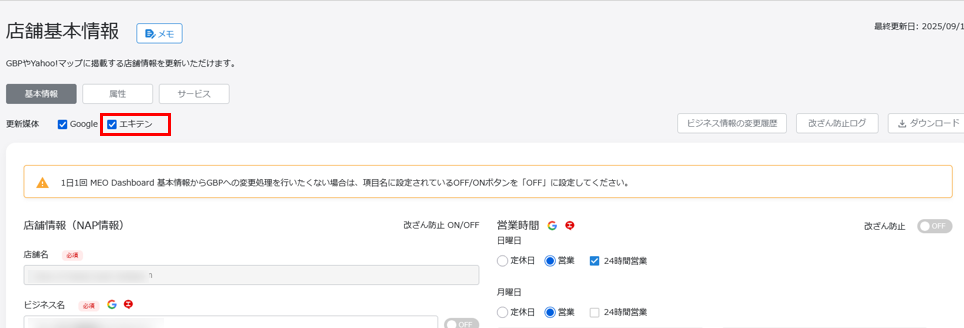
・エキテンのチェックを入れたまま、対象項目を入力します。
・エキテンアイコンが表示されている項目が更新対象です。
6-3. 写真・投稿・クチコミ返信
| 機能 | 操作の要点 | 注意点 |
|---|---|---|
| 写真管理 | 新規登録でエキテンにチェックし、カテゴリーを選び、画像をアップロード。 | 人物写真は本人同意が必要。コメント入力が必須。 |
| 投稿 | 投稿画面でエキテンを選び、即時または予約、掲載開始・終了、タイムライン通知を設定。 | Googleへの投稿は必須。投稿先店舗を確認。 |
| 個店クチコミ | クチコミ管理でエキテンを選び、コメントを開いて返信文を登録。 | 返信前に内容を確認。外部に公開される。 |
| グループクチコミ | Excelをダウンロードし、媒体がエキテンの行へ返信文を入力してインポート。 | 更新しない行は削除。必要に応じてWF申請。 |
| AI返信 | AI返信文章ダウンロード後、文章を確認・修正してインポート。 | 店舗らしい言葉に整える。 |
FAQ画像: エキテン写真管理
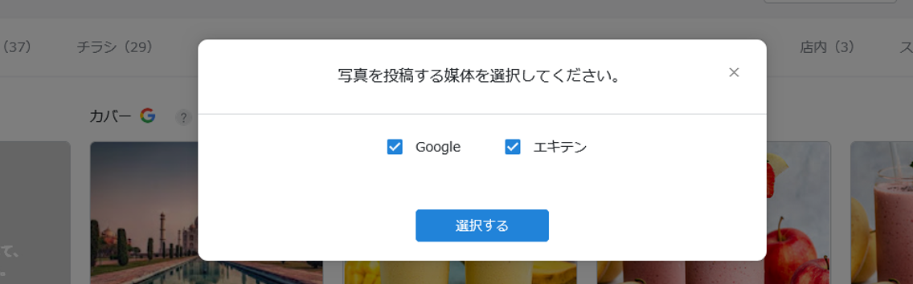
・対象媒体でエキテンを選びます。
・カテゴリー、本人同意、コメントの有無を確認します。
FAQ画像: エキテン投稿方法
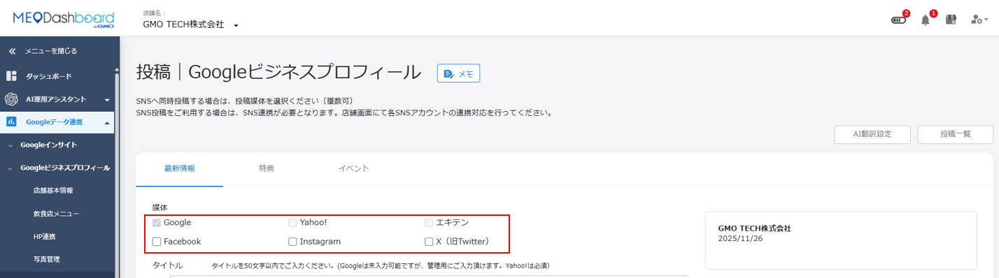
・投稿作成時に媒体でエキテンを選択します。
・掲載開始・終了やタイムライン通知の設定を確認します。
FAQ画像: エキテングループクチコミ返信
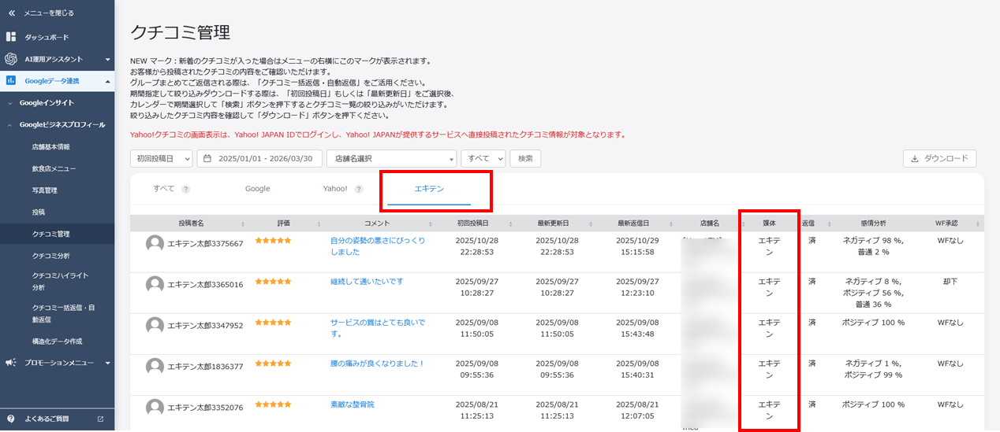
・媒体名がエキテンの行を対象に返信します。
・一括インポートは外部反映されるため、返信文の確認が必須です。
6-4. 管理者の追加・変更
・ログインできる場合は、追加したいメールアドレスをエキテン会員として新規登録します。
・既存の店舗管理者アカウントでログインし、店舗アカウント設定から店舗管理者アカウント追加を行います。
・管理者権限は、予約関連メールの受信範囲にも関わります。
・招待メールの認証URLを開いて設定完了です。
7. うまくいかない時の確認表
| 困ったこと | まず確認すること | 対応 |
|---|---|---|
| Yahoo!へ更新されない | 更新媒体チェック、Yahoo!アイコン付き項目、登録ボタン | 媒体選択を確認して再登録。反映待ちも考慮。 |
| Yahoo!投稿エラー | タイトル50字以内、本文URL含め330字以内 | 文章やURLを短くする。 |
| AppleマップURLが戻る | Apple審査ステータスがPROCESSINGか | PUBLISHEDになるまで待つ。再連携を繰り返さない。 |
| Apple連携エラー | ロケーション公開、別アカウント紐付け、管理者権限 | Apple Business Connect側を確認。 |
| 食べログ連携エラー | PR文5から200文字、食べログ側の登録情報更新 | 食べログ管理画面で修正後、再連携。 |
| 食べログメニューが怖い | 既存メニューを残す必要がないか | 一括登録前にFoodLuck側へ確認。 |
| エキテン電話番号エラー | ハイフンなし、国番号付き形式 | 入力形式を修正。 |
| クチコミ返信が反映されない | 媒体、審査、ステータス、WF申請 | 要修正理由を確認して再申請。 |
8. 運用前チェックリスト
□ どの媒体を更新する操作か確認した
□ 画面上部の更新媒体チェックを確認した
□ 媒体アイコンが付いている項目だけを編集している
□ 住所・電話番号・営業時間・URLに入力ミスがない
□ 保存・登録・インポート前に反映先を確認した
□ 食べログメニュー一括登録の上書きリスクを理解している
□ クチコミ返信は店舗らしい表現に整えた
□ Appleの審査中ステータスを再連携で解決しようとしていない
□ Excel一括更新では、更新しない店舗・行を削除または対象外にした
□ 不安な操作はFoodLuck側へ確認してから行う
9. この資料に反映したFAQ記事
| No. | カテゴリ | FAQ記事 | 本文での反映先 |
|---|---|---|---|
| 1 | Yahoo!プレイス | 複数店舗一括申し込み方法 | 3. Yahoo!プレイス |
| 2 | Yahoo!プレイス | Yahoo!プレイスのアカウント連携方法 | 3. Yahoo!プレイス |
| 3 | Yahoo!プレイス | Yahoo!店舗基本情報変更方法（個店） | 3. Yahoo!プレイス |
| 4 | Yahoo!プレイス | Yahoo!店舗基本情報変更方法（グループ） | 3. Yahoo!プレイス |
| 5 | Yahoo!プレイス | Yahoo!写真管理方法（個店・グループ共通） | 3. Yahoo!プレイス |
| 6 | Yahoo!プレイス | Yahoo!投稿方法（個店・グループ共通） | 3. Yahoo!プレイス |
| 7 | Yahoo!プレイス | Yahoo!クチコミ一括返信方法（グループ） | 3. Yahoo!プレイス |
| 8 | Yahoo!プレイス | Yahoo!クチコミAI返信アシスタントの使用方法（グループ） | 3. Yahoo!プレイス |
| 9 | Yahoo!プレイス | Yahoo!インサイト確認方法（個店） | 3. Yahoo!プレイス |
| 10 | Yahoo!プレイス | Yahoo!のインサイト確認方法（グループ） | 3. Yahoo!プレイス |
| 11 | AppleBusiness | Apple連携後Dashboard上の「AppleマップのURL」が正しく反映されない場合 | 4. AppleBusiness |
| 12 | AppleBusiness | AppleBusiness連携エラーの解消方法 | 4. AppleBusiness |
| 13 | AppleBusiness | Appleアカウント作成方法 | 4. AppleBusiness |
| 14 | AppleBusiness | AppleBusinessとのアカウント連携方法 | 4. AppleBusiness |
| 15 | AppleBusiness | Appleマップ 店舗基本情報の更新方法 | 4. AppleBusiness |
| 16 | AppleBusiness | Apple Account（Apple ID）作成時の電話番号認証がうまくいかない場合 | 4. AppleBusiness |
| 17 | 食べログ | 食べログ アカウント連携方法 | 5. 食べログ |
| 18 | 食べログ | 食べログ店舗基本情報変更方法（個店） | 5. 食べログ |
| 19 | 食べログ | 食べログ 飲食店メニュー項目 | 5. 食べログ |
| 20 | 食べログ | 食べログ 飲食店メニュー一括登録 | 5. 食べログ |
| 21 | 食べログ | 食べログ クチコミ管理画面（個店のみ） | 5. 食べログ |
| 22 | 食べログ | 食べログ連携時にエラーメッセージが表示される場合 | 5. 食べログ |
| 23 | エキテン | エキテン 申し込み方法 | 6. エキテン |
| 24 | エキテン | エキテンのアカウント連携方法 | 6. エキテン |
| 25 | エキテン | エキテン店舗基本情報変更方法（個店） | 6. エキテン |
| 26 | エキテン | エキテン写真管理方法（個店） | 6. エキテン |
| 27 | エキテン | エキテンクチコミ返信方法（個店） | 6. エキテン |
| 28 | エキテン | エキテン投稿方法（個店・グループ共通） | 6. エキテン |
| 29 | エキテン | エキテン店舗基本情報変更（グループ） | 6. エキテン |
| 30 | エキテン | エキテンクチコミ返信方法（グループ） | 6. エキテン |
| 31 | エキテン | エキテン 管理者の変更・追加方法 | 6. エキテン |
| 32 | その他 | 各媒体でDashboardから更新できる項目 | 1. 更新できる項目 |